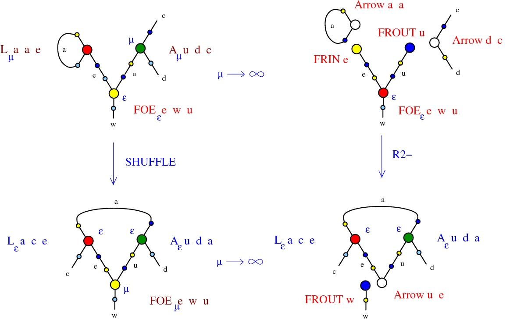
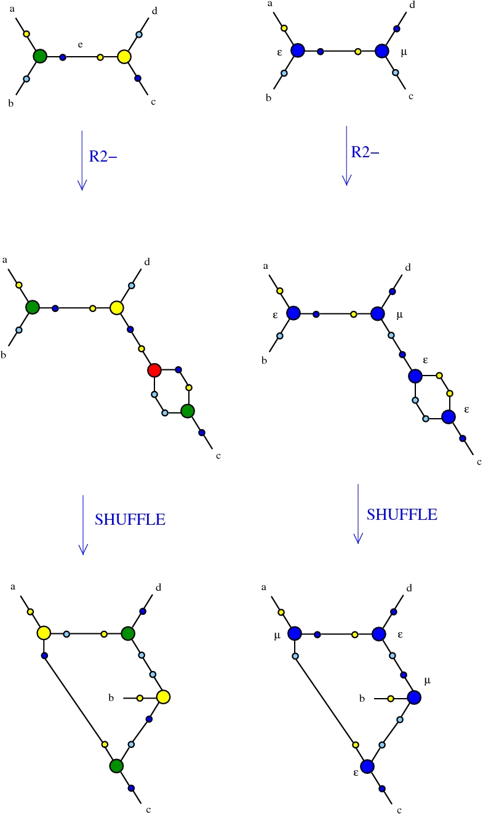

Introduction to Pure See. © Marius Buliga (2020), https://mbuliga.github.io/quinegraphs/puresee.html
All chemlambda projects
Pure See
is a geometrical, or cartographical lambda calculus. As primitives it uses variables, terms and a small number of special words: from, see, as, in, apply, with, note, over, free, origin.Contents
Scalars
Variables and terms
Commands
Multiplication by scalars. Origin
Conversion between commands and functional forms
Reduction of trigrams
Reduction by passing to the limit
Emergent rewrites
Scalars
(back to contents)
| special word | as a rational function |
|---|---|
| see | see[z] = z |
| from | from[z] = 1-z |
| apply | apply[z] = 1/z |
| with | with[z] = 1/(1-z) |
| note | note[z] = z/(z-1) |
| over | over[z] = (z-1)/z |
| as | as[z] = -1 |
| in | in[z] = 1 |
These scalars generate all the scalars via two operations: composition of scalars and multiplication of scalars.
Composition of scalars is defined as composition of functions
k[l][z] = k[l[z]], for k,l scalars
Multiplication of scalars is defined as multiplication of functions
[k l][z] = k[z] l[z], for k,l scalars
Variables and terms
(back to contents)
Variables are denoted by a, b, c, ... A term is either a variable or the result of an operation between terms. There are 6 operations: ◦ is "map" , • is "unmap", (lambda calculus style) abstraction, (lambda calculus style) application, > is "fi", < is "fox". All in all, a term is defined as:| origin | | | (is asimilated with a variable) | ||
| a | variable | | | ||
| a ◦ b | a, b terms | | | (map) | |
| a • b | a, b terms | | | (unmap) | |
| a > b | a, b terms | | | (fi) | |
| a < b | a, b terms | | | (fox) | |
| λ a. b | a, b terms | | | (abstraction) | |
| a b | b, b terms | | | (application) |
Commands
(back to contents)
As indicated in the images, each command can be associated to a directed interaction combinators (dirIC) node, as defined in:
[Alife properties of directed interaction combinators vs. chemlambda. Marius Buliga (2020), https://mbuliga.github.io/quinegraphs/ic-vs-chem.html#icvschem]
or a chemlambda [arXiv:2003.14332] node.
For the list of chemlambda rewrites and the history of versions see
[Graph rewrites, from emergent algebras to chemlambda. Marius Buliga (2020), https://mbuliga.github.io/quinegraphs/history-of-chemlambda.html]
The exceptions are the nodes named "D" and "FOX", first time used in kali24 (but see them described in the file chemistry.js) and the node "FIN", the fanin dual to the fanout FO.
| command | algebraic form | functional form | graphical form |
|---|---|---|---|
|
from e see a as b; |
map
b = e ◦ a; |
from e see a as b; |
|
|
see a from e as b; |
abstraction
b = λ e. a; |
see a from e as b; |
|
|
as b from e see a; |
application
a = b e; |
apply b over e as a; |
|
|
see a as b from e; |
fi
e = a > b; |
note a with b as e; |
|
|
from e as b see a; |
unmap
a = e • b; |
over e apply b as a; |
|
|
as b see a from e; |
fox
e = b < a; |
with b note a as e; |
|
in e as a free b;
in e free b as a;
in a as b;
in a;
as a;
free a;
Multiplication by scalars. Origin
(back to contents)
from[k] origin see[k] C as (k C);
k T = from[k] origin see[k] C
in origin as (k origin);
in ((k l) C) as (k (l C));
Conversion between commands and functional forms
(back to contents)
apply b over e as a;
(apply as) (as b from e see a);
| b = a; | is replaced by | in a as b; |
| command | functional form | replace by |
|---|---|---|
| from e see a as b; | b = e ◦ a; | in (e ◦ a) as b; |
| see a from e as b; | b = λ e. a; | in (λ e. a) as b; |
| as b from e see a; | a = b e; | in (b e) as a; |
| see a as b from e; | e = a > b; | in (a > b) as e; |
| from e as b see a; | a = e • b; | in (e • b) as a; |
| as b see a from e; | e = b < a; | in (b < a) as e; |
Reduction of trigrams
(back to contents)

Reduction by passing to the limit
(back to contents)
Emergent rewrites
(back to contents)

